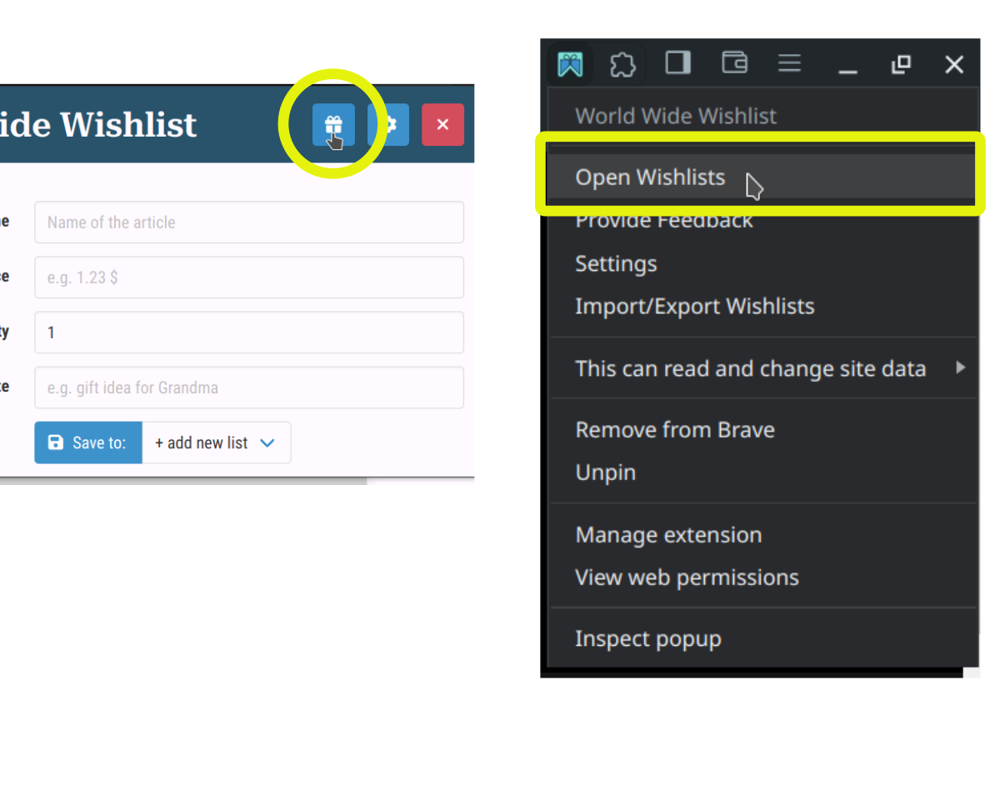
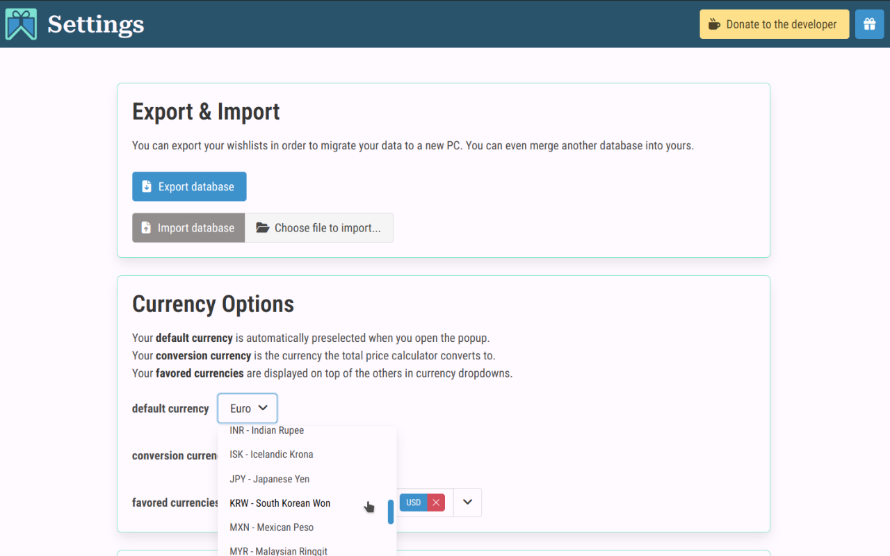

In order to quickly save a wish from any website you need to pin this extension to your chrome, so it will always be displayed at the top right.
To do that click on the little puzzle piece in the top right corner of your browser.
Then click the pin needle so it's colour changes.
How to save wishes?
Click the extension icon on the product website you want to save. Select the correct image as a product image.
You can move the mouse cursor outside of the popup to see more info from the page underneath.
Select the wishlist you want the wish to save to and hit save.
Where are my Wishes saved?

You can go to your wishlists either via opening the popup
(the little gift icon in the top left) or by right-clicking the icon and selecting "Open Wishlists".
There's more!

In the settings you can select which currencies the price converter should convert to and which currency should be selected by default.
You can also Export your Wishes for backups and migration to a new PC.